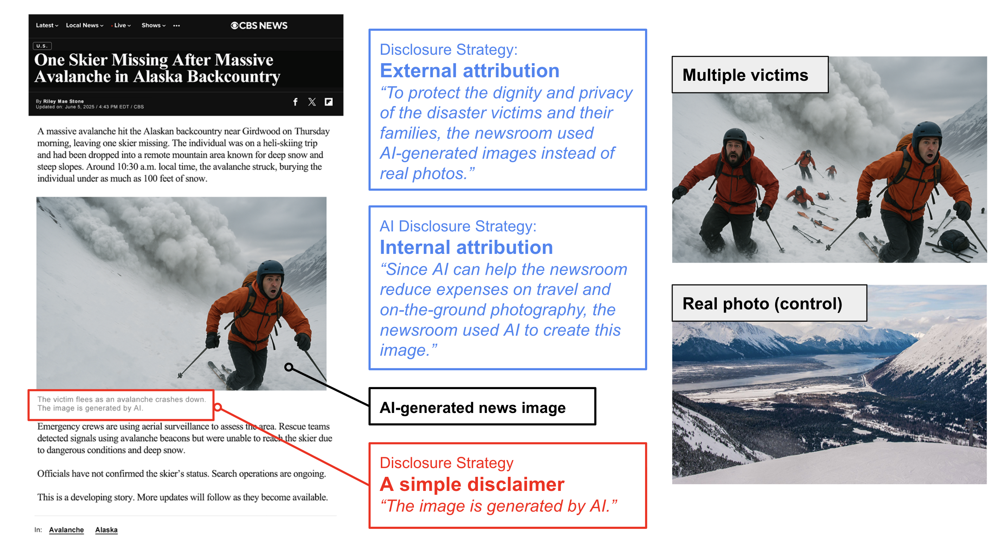
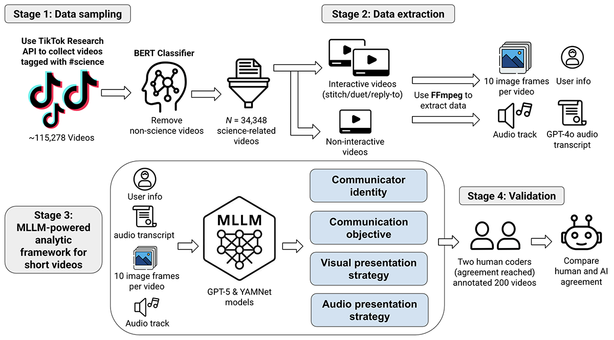
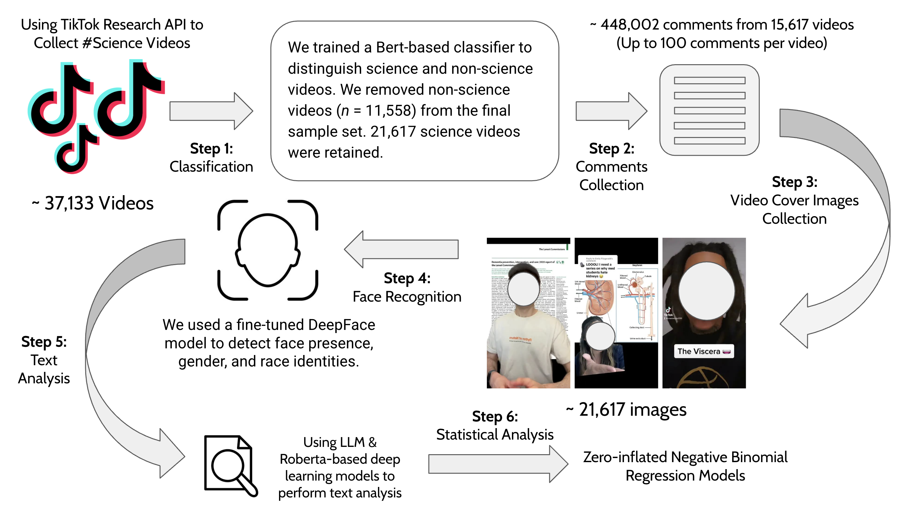
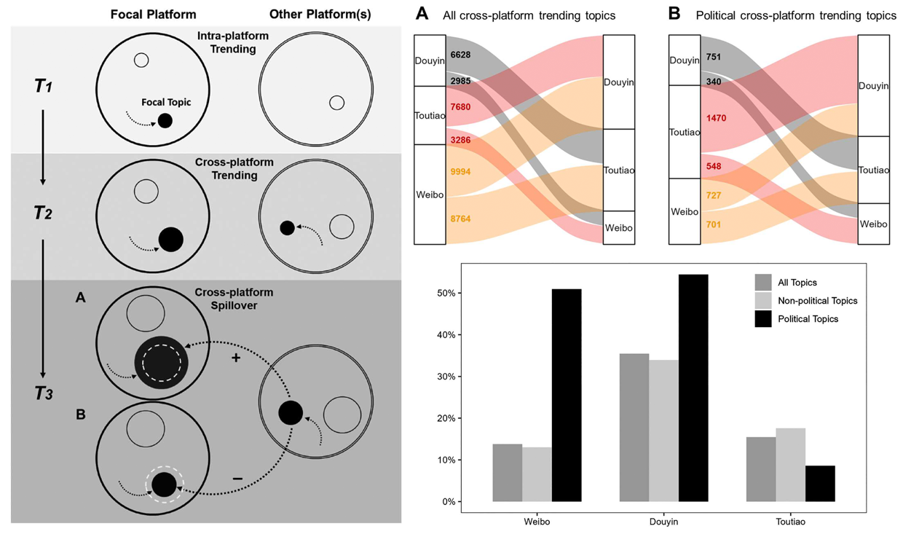
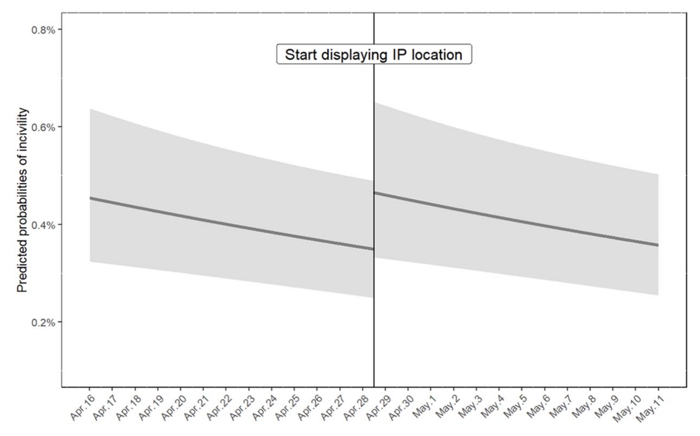
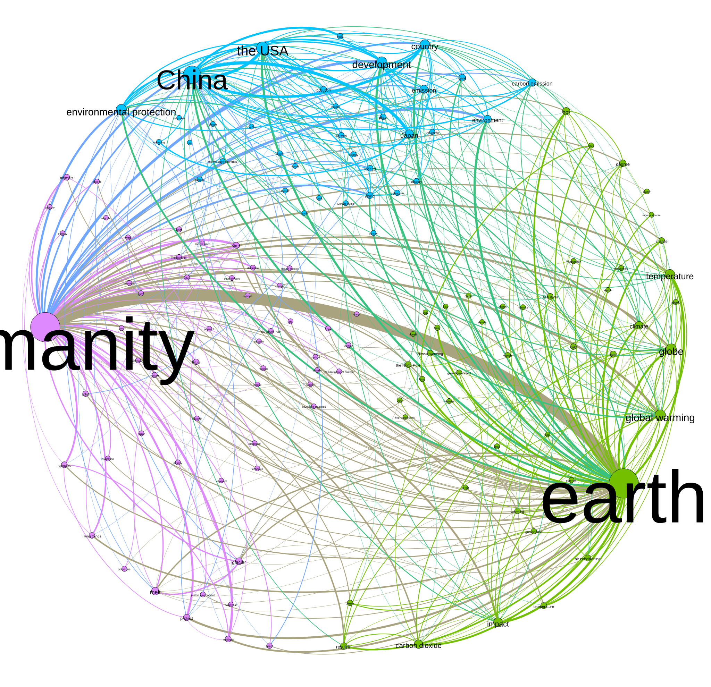

Perceived legitimacy matters: Building public trust and acceptance of AI-generated news images through strategic AI disclosure
Journalism & Mass Communication Quarterly, 2026Top Student Paper SRA '2025
I'm a Ph.D. candidate at the Department of Communication and Media, University of Michigan, under the guidance of Dr. Hang Lu.
My research centers on science, environmental, and crisis communication, visual communication, and computational social science. I aim to investigate how emerging forms of visual media, such as short videos (EC, 24; ICS, 26; CCR, 26), AI-generated images (JMCQ, 26), deepfakes, and other visual content, are reshaping public engagement with science, risks, and disasters. I draw on experimental and computational methods with large-scale datasets to address these questions.
My work has appeared in many peer reviewed journals, including Information, Communication & Society, Journalism & Mass Communication Quarterly, New Media & Society, Computational Communication Research, and Environmental Communication. I won top student paper awards from the International Communication Association in 2022 and the Society for Risk Analysis in 2025, respectively.
I obtained my M.A. degree from Tsinghua University, with a certificate in Big Data Analytics. I received my B.A. degree from Wuhan University.

Journalism & Mass Communication Quarterly, 2026Top Student Paper SRA '2025

Computational Communication Research, 2026

Information Communication & Society, 2026

Information Communication & Society, 2026

New Media & Society, 2025

Environmental Communication, 2024 Top Student Paper ICA '2022